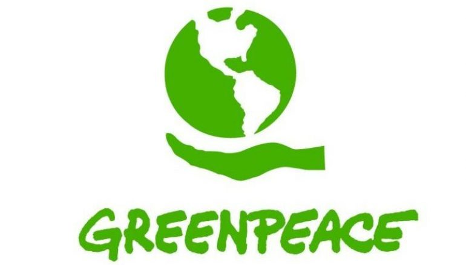

TUDO POR UM MUNDO MELHOR
ONGS DE SUSTENTABILIDADE AMBIENTAL


INTUITO DO SITE:
O NOSSO OBJETIVO É MOSTRAR DIVERSAS MANEIRAS DE JUDAR NA CAUSA DA CONSERVAÇÃO DA NATUREZA, AQUI ESTÃO REPRESENTADAS 6 ONGS DIFERENTES,QUE GOSTARIAMOS DE INCENTIVALO(A)
A DOAR, LEMBRANDO QUE A QUANTIA NÃO IMPORTA, AJUDE A CAUSA COM O QUE CONSEGUIR, PENSE QUE NÃO ESTA AJUDANDO UMA ONG MAS SIM O SEU FUTURO E AS FUTURAS GERAÇÕES, O FUTURO DEPENDE DE VOCÊ!
INSTITUTO REGENERAÇÃO GLOBAL
TEM COMO MISSÃO PROMOVER AS SOLUCÕES QUE CONTRIBUEM PARA A REGENRAÇÃO DO PLANETA E O EQUILÍBRIO DA SOCIEDADE.(mais informações no site)
GREENPEACE
O GREENPEACE REALIZA AÇÕES OUSADAS EM NOME NA NATUREZA, POR EXEMPLO, FICA ENRE CAÇADORES DE BALEIAS E OS ANIMAIS, PERMANECEM EM PEQUENAS EMBARCAÇÕES NA FRENTE DE GRANDES NAVIOS QUE PRETENDEM LANÇAR LIXO EM OCEANOS, ALÉM DE ENTRAR NA FRENTE DE TRATORES DESTINADOS AO DESMATAMENTO.
IMAFLORA
O TRABALHO DO IMAFLORA BUSCA INFLUENCIAR A CONSTRUÇÃO DE POLITICAS FLORESTAIS, AGRÍCOLAS E CLIMÁTICAS QUE CONTENHAM OS PRINCIPIOS DE UM GOVERNO ABERTO, COM TRANSPARÊNCIA NAS DECISÕES E NA PRESTAÇÃO DE CONTAS À SOCIEDADE.
IPE
É UMA DAS MAIORES ONGS SOCIOAMBIENTAIS DO BRASIL, O INSTITUTO DE PESQUISAS ECOLÓGICAS É UMA ORGANIZAÇÃO BRASILEIRA QUE TRABALHA PELA CONSERVÇÃO DA BIODIVERSIDADE NO PAÍS.
ISA
ATUAM DESDE 1994 AO LADO DE COMUNIDADES INDÍGENAS, QUILOMBOLAS E EXTRATIVISTAS, PARA DESENVOLVER SOLUÇÕES QUE PROTEJAM SEUS TERRITÓRIOS, FORTALEÇÃM SUA CULTURA E SABERES TRADICIONAIS, ELEVEM SEU PERFIL POLÍTICO E DESENVOLVAM ECONOMIAS SUSTENTÁVEIS
SOS MATA ATLÂNTICA
ATUA NA PROMOÇÃO DE POLÍTICAS PÚBLICAS PARA A CONSERVAÇÃO DA MATA ATLÂNTICA POR MEIO DO MONITORAMENTO DO BIOMA, PRODUÇÃO DE ESTUDOS, PROJETOS DEMONSTRATIVS, DIÁLOGO COM SETORES PÚBLICOS E PRIVADOS, APRIMORAMENTO DA LEGISLAÇÃO AMBIENTAL, COMUNICAÇÃO E ENGAJAMENTO DA SOCIEDADE.
PRÓXIMA PÁGINA
PÁGINA ANTERIOR